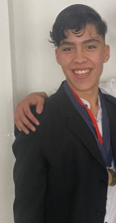
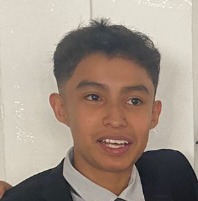

Mis amigos
Jadiel
Jadiel es el primer amigo que tuve que aparece en esta parte, lo conozco desde la primaria y nos llevamos interactuando juntos un buen rato hasta finalizar la secundaria, donde, no coincidimos en escuelas.
Aunque todavía lo veo de vez en cuando, es el primero que me saca una sonrisa porque hace pura burrada.
Adjunto foto del jadiel:

Maia
A Maia la conocí en primero de secundaria, aunque hablamos y nos volvimos amigos hasta mediados de segundo. Ella, es mi mejor amiga; no hay día donde no nos hablemos o donde no hagamos algo juntos; desde secundaria me ha apoyado en cosas que he necesitado al igual que yo he podido hacer lo mismo, escuchándola y viendo que puedo complementarle a su vida.
Adjunto foto de maya:
Erick
A Erick, al igual que la anterior, lo conozco desde secundaria, es verdad que estaba conmigo en primaria pero empezamos a hablar por ahí de inicios de tercero. Erick es el unico de aquí con el que tengo la oportunidad de seguir viéndolo en la escuela, ya que agarró, al igual que yo, el Cecyt 3, con la unica fallita que él va en la tarde y yo en la mañana. De ahí en fuera, Erick es un grande, me acompañó durante todo el primer semestre que cursabamos vespertino y actualmente lo sigo viendo pero menos.
Adjunto foto del eric:
Leonardo
Por último, tenemos a Leonardo; Leonardo, Leonegro, Leonigga, Leonel. etc, hay muchas formas de llamar a este individuo, afortunadamente todas se las toma a bien, este cuate lo conocí en secundaria, y, quiensabe porque, nos hicimos amigos. Yo supongo que era porque convivía con Erick y de ahí se relacionó. Con el solía jugar videojuegos en las noches con el fin de disfrutar las vacaciones y por poco que me toca tenerlo conmigo otros tres años, lástima que fueron 3 puntos en COMIPEMS que no lo hicieron posible.
Adjunto foto de frionel:
